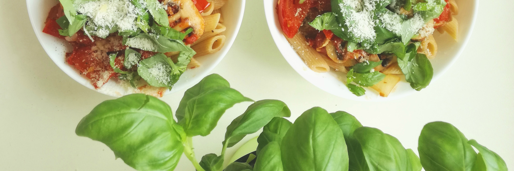

How to eat healthy when moving abroad
How to eat healthy when moving abroad: 5 steps to get back on track
Sugar has always been a bit problematic to me, even though I managed to basically remove it mostly from my diet a few years ago, it came back to my life when I moved to Germany.
As some of you know, the situation in my home country, Venezuela, is quite terrible, specifically regarding food. Finding basic items is really an odyssey. You have to pay crazy amounts of money to buy stuff like rice, beans or eggs in the black market, and having imported sweet goods or chocolates is not really a possibility for most of the population.
The good part was that I learned how to eat very simple and healthy, just with what I was able to find, mostly veggies, lots of fruits and some grains. Still lacking some nutrients, but trying my best to thrive.
When I arrived to Munich, things got a bit crazy as I wasn’t used to the gigantic amount of sweet stuff you can find here. It is insane, I was amazed of the variety of food, so attempting to be frugal, healthy and at the same time, adapting to a new place wasn’t so simple!
The cheaper foods were always the crappiest ones, full of sugar and super processed, but affordable, and of course, colorful and delicious. I wanted to try them all, at least once! But then, one means one hundred, or more! Then you inevitably, get caught by the habit of eating sweets and is not that easy to fight this out.
After a few months of eating way more sugar than I was used to, I started to feel how my health was getting less and less optimal, and avoiding sweets was getting harder everyday. Sugar is addictive! You can say you have tons of willpower, but if you’ve already let that bad habit get into your life, it gets very very tricky to remove it.
Now, not everything is lost! Even if you think it is impossible, you can always find your way to move forward and change bad habits that are currently stuck in your routine. After putting some effort and being self conscious about the real dangers of sugar I decided to make some changes in my life to get my health back! This process took awhile, but eventually I started to feel better day after day!
Create new habits
Or change the bad ones you already have by making some adjustments the routine you’re currently doing for a healthier one. If you find yourself having always a sugary breakfast, snacking on chocolates a couple of times a day, or having dessert after lunch or dinner, you can easily make a switch to healthier options.
Instead of:
- Snacking on chocolates, go and grab some nuts, fruit, plain full fat yogurt or vegetables.
- Having dessert, try brewing some tea or coffee and enjoy its taste.
- Sitting all day, try getting up and walk around a couple of times a day.
Those are just examples, but you may encounter yourself with many other bad habits, and trying replacing them for something that will bring you the same (or a similar) reward will be the easiest way to make them stick in your new life.
Prepare food at home
If you’re really trying to take the control of your health, you would need to prepare food at home, as this the only way to really know what you’re putting into your body. Cooking your own food might take up some extra time and effort but is definitely worth it, both for your health and your budget.
One advice regarding preparing for at home, is to go and make simple stuff, nothing fancy or complicated, and make big batches that can last for up to 5 days.
An example could be to prepare a big batch of brown rice, grilled chicken, lentils and steamed vegetables.
For dinner, try to stay at home and eat a soup, salad, vegetables and protein, or whatever you prefer :) But homemade is always better.
Eat simple food
Less salt, less preparations steps, less ingredients. You will get used to a simpler taste, and that is a good thing! We eat to nurture ourselves and to provide our bodies with all the nutrients we need.
There’s no need to eat every single day dishes that make an explosion of flavor in our mouths. Our taste buds get used to this amount of spiciness and we loss sensitivity to more subtle seasonings.
Have breakfast everyday
Make an effort on getting up a bit earlier and have some breakfast before going out. You are going to need probably just some extra 30 minutes to prepare, eat and clean everything, even on those days when you’re feeling extra sleepy. Instead of having a croissant, fruit yogurt or a juice on the go, you can cut down your sugar intake by preparing it yourself at home.
Try adding healthy alternatives such as avocados or eggs to your morning ritual. If you prefer a sweeter taste go for oatmeal, whole yogurt and coconut. All of those are very healthy ingredients to start your day with enough long lasting energy.
Check the healthy local options.
If you are used to specific ingredients and in this new place they are too expensive and hard to find, try to check which are the healthier local alternatives at your fingertips. There’s always a cheaper option that is nutritive as well no matter where are you currently living.
Instead of:
- Papayas, mango and pineapples, go for apples, pears and berries.
- Corn and yuca, stick to buckwheat and potatoes.
Or vice versa :)
Now you can try all of this suggestions, but make repeat them over and over again. Create those new habits you want to have in your life.
You can start just with one step at a time, but make sure to make those changes consistently, day after day. You’ll see that in no time they are just part of your daily routine and you won’t need to put so much effort anymore to live healthier and happier :)
Gallery
Here are some examples of the food I like to prepare and enjoy. You can take this as some motivation to start today! :) I will be uploading recipes and a Sugarfree challenge very soon!